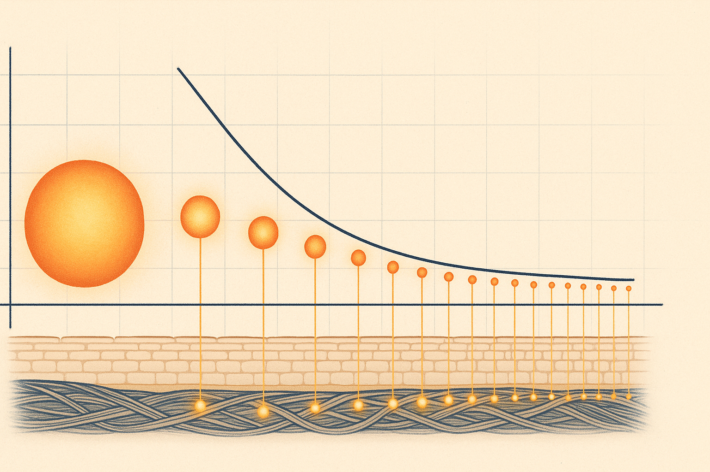
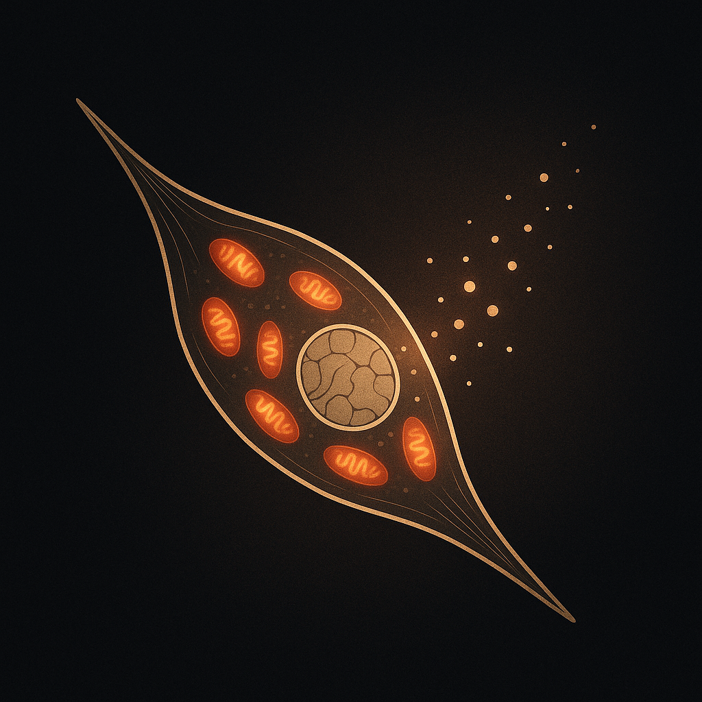
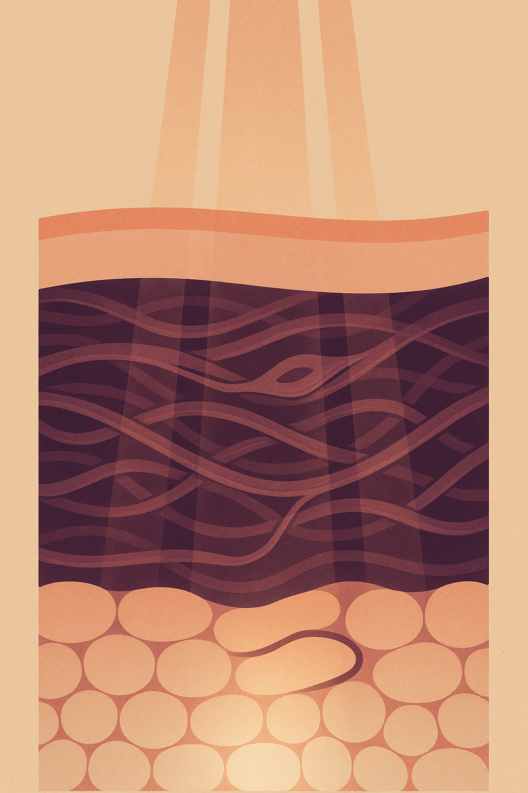

Review below. Reply approve to publish the Facebook post, or tell me edits.

Before you spend a cent on any skincare device, borrow a habit from people who buy tools for a living: ignore the sticker price and work out the cost per use.
The formula is simple. Take the price of the device. Divide it by the number of sessions you will realistically get out of it across its usable life. Not the number of sessions the marketing implies. The number you, with your actual schedule, will honestly do.
That one division changes how almost every device purchase looks. A cheap gadget you abandon after two weeks is expensive. A dearer one you use most days for a year can be startlingly cheap. Cost per session, not sticker price, is the number that tells you the truth.
So let us run it on LED, properly, with the concessions included.
Short version: yes, there is a real mechanism, and no, it is not instant. The proper name is photobiomodulation. Stripped of the jargon, certain wavelengths of visible light are absorbed inside your skin cells and gently nudge them to do their normal work a little more actively, supporting the look of tone, radiance and firmness over time. It is closer to flossing or sunscreen than to a facelift: a slow, cumulative input, not a one-off fix. That honest frame holds whether you book a salon or run red light therapy at home. It also means the maths matters, because a mechanism that only works with repetition is only worth paying for if you will actually repeat it.
In Australia, a single professional LED session is commonly cited in the range of $60 to $100, depending on the clinic and whether it is bundled with a facial. Treat that as a typical range to reason with, not a quote: prices vary by city and by provider.
Here is the thing about salon LED that rarely makes the brochure: light-based skincare is a consistency game. The mechanism, photobiomodulation, works through repeated small exposures over weeks, not one big hit. Most clinics will tell you the same, which is why they recommend a course of sessions rather than a one-off.
Say two sessions a week for eight weeks, a fairly standard course. At $60 to $100 per visit, sixteen sessions lands somewhere between $960 and $1,600. Plus travel, plus booking around work and kids. For many people that is simply not sustainable, so the course quietly stops, and the results stop with it.
None of that makes salon LED bad. It makes it a recurring cost with a scheduling problem attached.
Now the part an honest comparison has to include. Clinic and salon LED panels run at higher irradiance than any at-home mask, ours included. A single professional session delivers a stronger dose of light than ten minutes under a home device. That is just physics and hardware, and we are not going to pretend otherwise.
For the record, our mask also does not include near-infrared. Some devices do, and if NIR is specifically what you are after, we would rather you know that now than find out after checkout.
So the real trade is not "same thing, cheaper". It is power versus consistency. The salon gives you a stronger dose you book occasionally. The home mask gives you a gentler dose you can repeat daily, ten minutes at a time, while the kettle boils or the news plays.
For slow biological processes like collagen support, the research direction and most practitioners point the same way: regular, repeated exposure matters enormously. A gentler dose you actually deliver five or six times a week tends to serve you better than a stronger dose you manage twice a month. The best device, like the best exercise plan, is the one you will actually do.
Industry coverage in Australia (Professional Beauty AU) has put the average price of an at-home LED device near $557. Again, that is context, not a benchmark to beat: home devices range from under a hundred dollars to well over a thousand.
Run the division on that average. If a $557 device gets used four times a week for a year, that is roughly 208 sessions, or about $2.70 per session. Used daily for a year, closer to $1.50. Used for a fortnight and then left in a drawer, it works out to nearly $40 a session, which is salon money for a fraction of a salon dose. The drawer is where device value goes to die.
Which is why the honest question before buying any mask is not "is it good?" but "will I actually use it?" Ten minutes a day is the whole ask with ours. And ten minutes is smaller than it sounds: one podcast segment, the time the pasta water takes to come to the boil, a scroll you were going to do anyway with a mask on instead. If that sounds realistic for your life, the arithmetic works hard in your favour. If it does not, save your money. Genuinely.
No miracles, and we will not pretend otherwise. What consistent LED can support is the look of things: a bit more glow, more even-looking tone, and over a longer run, softer-looking fine lines as it supports the skin's own collagen work. It is a cosmetic device, not medicine. It is not a filler, not a peel, and not a cure for any skin condition.
Photobiomodulation research and typical cosmetic-device timelines point to a rough sequence, and it is worth setting expectations by that rather than by an ad. With consistent use, glow and more even-looking tone tend to show first, commonly cited around the 7 to 10 day mark. Softer-looking fine lines are slower, usually described in the 4 to 8 week range. Those are general timelines from the research and the category, not results we are claiming from our own reviews, and they describe the look of skin, not a medical outcome.
Per session, by a wide margin, yes, provided you use it. Per dose of light, the salon still wins each individual visit. Over months of consistent use, the home routine tends to out-value the occasional strong session for the slow, cumulative work.
One more honest note before any offer. Redermis is a new brand. We do not yet have a wall of glowing reviews, and we are not going to invent one. What we can give you is the arithmetic above, the full specifications, and a realistic account of what consistent red light can and cannot do. Judge us against that.
If the maths stacks up for you, the Redermis face-and-neck mask, with 7 LED colours, 309 emission points across the face and neck pieces, and a 10-minutes-a-day protocol, is currently available at the $129 introductory founding-customer price. Run your own division: at four sessions a week for a year, about 208 sessions, you are looking at roughly 62 cents a session. That is the number worth deciding on. If you ever want a closer look, the full spec is on the Redermis face and neck mask product page.

Before you spend a cent on red light therapy, at home or in a salon, do one small sum first.
A salon LED session in Australia typically runs $60 to $100.
Book one a week and a single month of light costs more than a lot of home masks do outright.
Now the honest part. Salon panels are stronger. One session under a clinic panel delivers more light than one session at home, and we are not going to pretend otherwise.
But the research on LED keeps circling back to consistency.
Skin seems to respond to a gentle dose it gets most nights, not a big dose it gets occasionally. Ten minutes on the couch is a habit you can actually keep.
Here is where the sum lands. A home mask used four times a week for a year is about 208 sessions. Spread the price across those and it works out to roughly 62 cents a session.
The salon dose is stronger. The home habit is the one you can afford to repeat.
Redermis is new and still earning its reviews, and this is a cosmetic device, not medicine. So do the maths, and judge it on the arithmetic.
Comment your rough monthly skincare spend and we will work out your real per-use cost.
**First comment:** The Redermis face and neck mask is available now at the $129 introductory price: https://redermis.com.au/products/red-light-therapy-face-neck-mask
**Hashtags:** #RedLightTherapy #SkinLongevity #LEDMask #LEDFaceMask #SkincareAustralia #RedLightTherapyAtHome
**IMAGE PROMPT:** Editorial conceptual science illustration in the style of New Scientist and Scientific American, a single iconic motif centred in deep neutral negative space with restrained chiaroscuro lighting. One stylised fibroblast skin cell rendered in a clean cross-section with precise, elegant linework, its nucleus and slender spindle shape drawn correctly. Inside the cell, several mitochondria are drawn as small warm ember-like glowing bodies, each a soft honey-amber and muted-red core. A gentle field of soft warm light particles drifts inward from the surrounding space toward the cell and is absorbed exactly at the mitochondria, a legible metaphor for where a dose of light actually lands and is used inside a skin cell. Restrained palette: deep neutral and near-black background, soft warm ambers and muted reds for the glowing organelles and particles, faint gold rim light on the cell membrane. Subtle grain, deliberate composition, generous negative space, one legible iconic motif. No text, no letters, no numerals, no logos, no people, no faces, no devices, no masks, no technology, no hourglasses, no sunbursts, no halos.

The real price of a skincare device is not on the box. It is per use.
Quick maths.
A salon LED session in Australia typically runs somewhere between $60 and $100. And most salons will tell you honestly: one visit is not the protocol, a course is.
The Redermis mask is $129 at its introductory price.
Use it four times a week for a year and that is about 208 sessions.
Roughly 62 cents a session. Keep going and it keeps falling.
Now the honest bit.
A salon panel is stronger per session. We are not going to pretend otherwise. An at-home mask is the gentler dose: lower intensity, repeated most days. And with LED, consistency is most of the story. The best light protocol is the one that actually happens.
What to realistically expect, going by photobiomodulation research and typical cosmetic-device timelines rather than our own reviews: skin looking a touch glowier and more even in 7 to 10 days. Fine lines are slower, more like 4 to 8 weeks of daily use. It is a cosmetic device, not medicine.
One more thing. Redermis is new. We do not yet have a wall of reviews, and we are not going to invent one. Judge it on the maths and the mechanism.
Link in bio for the introductory price.
Save this before your next device purchase. Send it to the friend with three unused gadgets in a drawer.
And tell us below: what does one LED session cost at your local salon? Drop the number.
#redlighttherapy #ledmask #skincareaustralia #aussieskincare #athomeskincare #LEDFaceMask #skincaretips #RedLightTherapyAtHome #skinlongevity #beautytools #skincareover30 #skincareover40 #collagensupport #evenskintone
IMAGE PROMPT: Elegant editorial science illustration in the style of Quanta Magazine and Scientific American, vertical 2:3 composition. A clean cross-section of skin as three stacked translucent horizontal strata filling the frame: a thin smooth epidermis at the top, a deep dermis of biologically accurate woven wavy collagen fibre bundles with one spindle-shaped fibroblast and one small looping capillary, and a softer subcutis of rounded translucent lobules at the base. Gentle parallel warm amber-rose rays descend vertically from the top edge, passing through each stratum and terminating in a softly glowing renewal zone at the base of the dermis. Structured, precise linework, flat sophisticated colour fields: warm coral, soft rose, deep plum and cream on a muted warm background, dewy and refined, generous negative space, legible at small sizes. Absolutely NO people, NO face, NO body silhouette, no text, no numerals, no labels, no logos, no devices, no products, no masks, no sunbursts, no halos. Negative prompt: person, face, body, portrait, silhouette.
**Title:** Red Light Therapy at Home vs Salon Cost: Honest Cost Per Session Maths
**Description:** The honest cost-per-session maths on red light therapy at home versus the salon:
- A single salon LED session in Australia often runs $60 to $100, and the mechanism only works if you keep going back.
- An at-home LED face mask at the $129 introductory price, used four times a week for a year (about 208 sessions), works out to roughly 62 cents a session, and it keeps falling from there.
- The honest trade-off: the salon dose is stronger, but the mask wins on consistency, the gentle dose you can actually repeat.
- Realistic timelines from photobiomodulation research: glow and more even tone around 7 to 10 days, softer-looking fine lines around 4 to 8 weeks. Cosmetic device, not medicine.
- We are new and still earning our reviews, so judge it on the maths and the mechanism.
Red light therapy at home is not faster than the salon. It is the same gentle mechanism, priced so you can actually stay consistent.
**Destination URL:** https://redermis.com.au/products/red-light-therapy-face-neck-mask
**Hashtags:** #RedLightTherapy #LEDFaceMask #RedLightTherapyAtHome #SkincareRoutine #SkinLongevity
Note: this pin reuses the Instagram image (no separate image is generated for Pinterest).